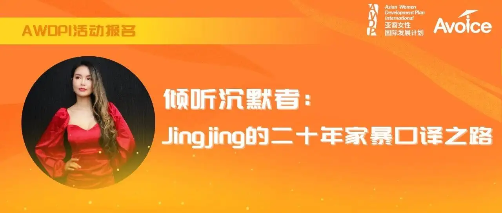
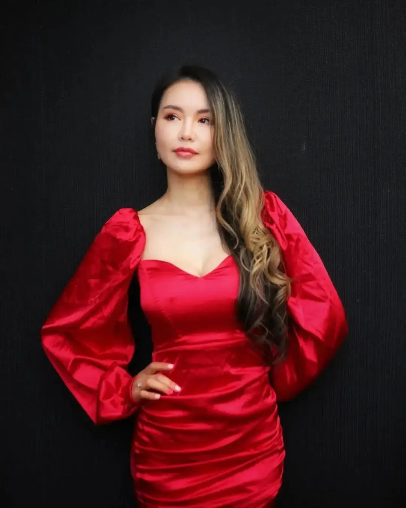
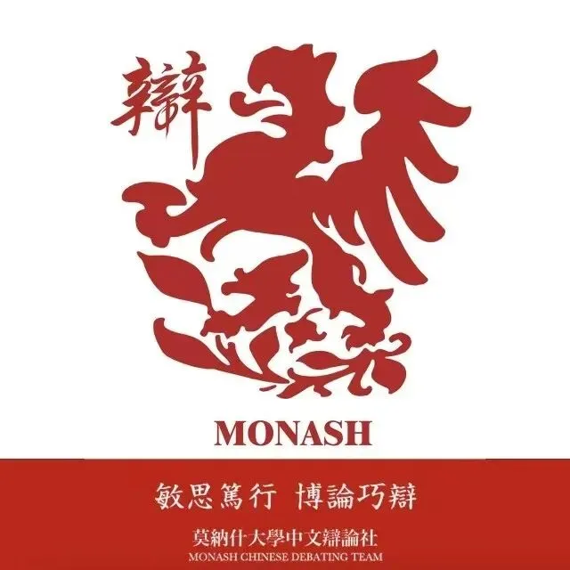

Jingjing Lipski
21年中给反家庭暴力各级社区组织和司法系统提供了口译服务
参与2015年习主席带团来澳洲访问翻译工作
前澳洲中文翻译协会副主席
2010年 翻译社区杰出贡献奖
2014年Liberty Victoria Voltaire Award得主，目前唯一得此奖项的华人
在海外生活的亚裔女性在遭遇家庭暴力或性别暴力时，语言往往成为她们通往社会支持体系的第一道障碍。在澳大利亚的司法与社区服务系统中，一位华人女性如何在沉默与崩溃之间，成为连接制度与个体的语言桥梁？作为一名在翻译与人权领域深耕二十余年的专业口译员，Jingjing Lipski 用语言为受害者撑起“被听见”的可能，也以行动为处于社会边缘的亚裔女性发出真实而坚定的声音。
本次座谈会，AWDPI澳大利亚国家办公室诚邀 Jingjing 分享她踏上翻译之路的契机与历程，同时讲述她在处理家庭暴力等案件中，如何面对受害者的情绪崩溃与制度层面的盲区，始终坚守自己的职责。作为唯一获得Liberty Victoria Voltaire Award 的华人翻译，她也将回应这一荣誉背后的意义，并探讨翻译工作如何从“技术角色”拓展为一种社会责任。
活动还将聚焦亚裔女性在性别、文化与语言交织下的复杂处境。在文化禁忌与家庭压力的双重夹击中，Jingjing 如何理解“沉默”的根源？又如何鼓励更多女性“说出来”？我们也将从她的经验出发，讨论澳洲现行翻译体系在面对少数族裔女性时的制度盲区，以及翻译如何成为真正有效的支持，而非流程化的表面协助。
这不仅是一场关于翻译的专业访谈，更是一场关于 创伤、共情与女性生存经验的深刻对话。透过 Jingjing 的视角，我们将重新审视语言的重量，也重新思考亚裔女性在澳洲社会中应有的权利与位置。
活动时间
2025年6月3日（星期二）
5:30pm - 7:30pm（墨尔本/悉尼时间）
3:30pm - 5:30pm（北京时间）
活动形式
线上视频会议 / 线下座谈会（含 Q&A 环节）
活动报名
请扫描二维码进行报名，名额有限，现场提供免费茶点及饮用水
合作方/场地提供

来源 | AWDPI澳洲办公室
排版 | 王佳怡